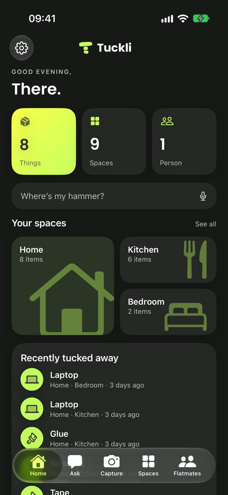
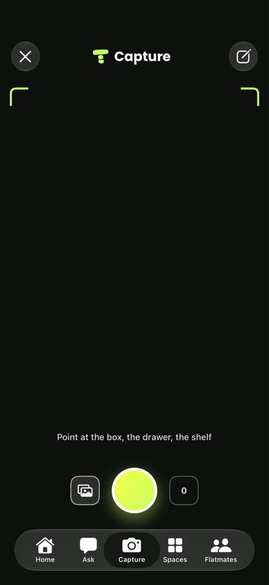
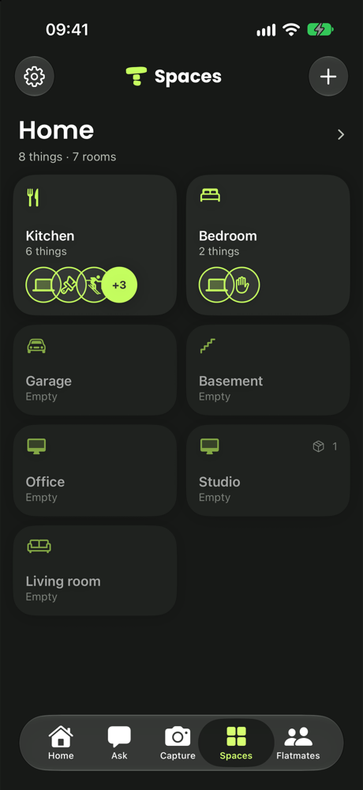
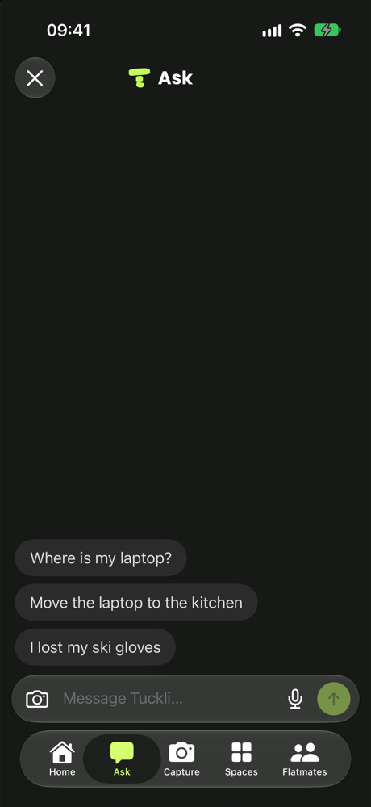
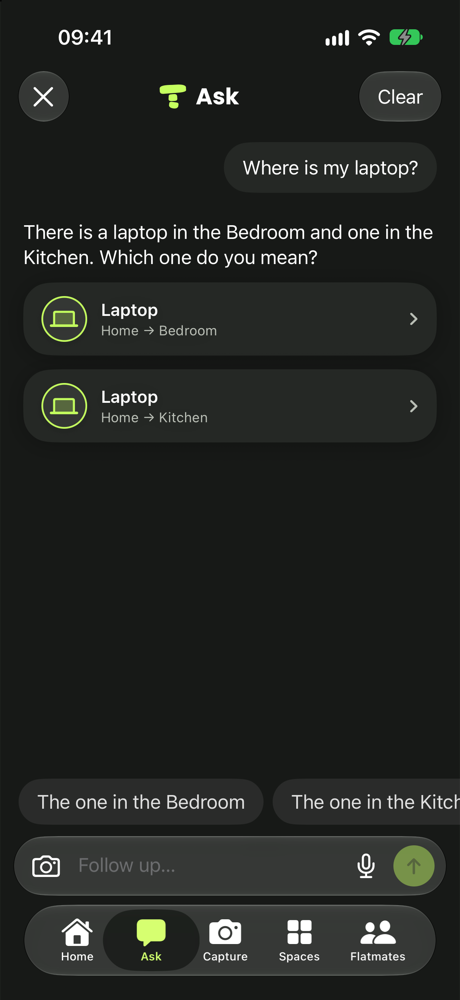
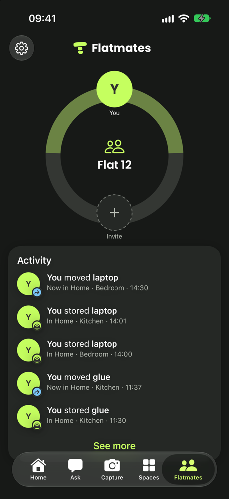

Point. Tap. Remembered.
Take a photo of the box, the drawer, the shelf. Tuckli names what it sees.
You confirm, pick the spot, done.
Example photo — the names come from your own picturesPhotograph a box, a drawer or a freezer shelf once. Months later, ask for anything and Tuckli tells you exactly where it is tucked away.

Put it away once, find it any time. Scroll through what Tuckli does.
Take a photo of the box, the drawer, the shelf. Tuckli names what it sees.
You confirm, pick the spot, done.
Example photo — the names come from your own picturesYour home laid out the way you keep it: rooms, then the freezer, the shelf, the box inside.
“Where is my laptop?” Tuckli answers with the place — and asks which one when there are two.
Move things or report them lost in the same chat.
How many things, how many spaces, and what was tucked away most recently.
Everyone can add and find. See who moved what, and when.





Take a photo. Tuckli names what it sees. You confirm, pick the spot, done.
‘Christmas lights’ finds the fairy lights. Works in the basement with no signal.
What is still in there, and how many.
Everyone can add and find. Did someone already freeze chicken?